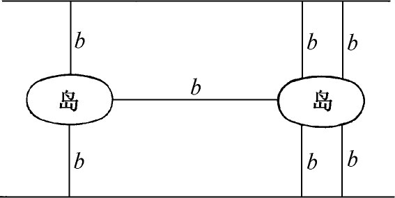
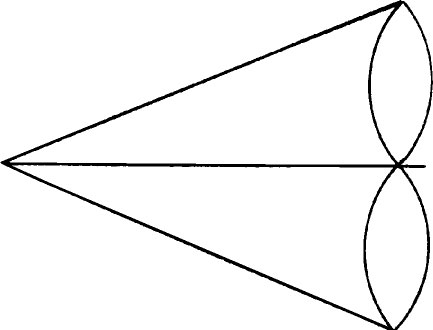
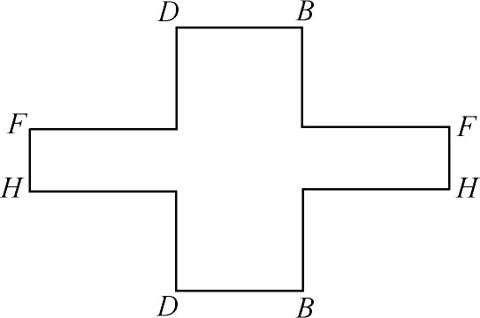
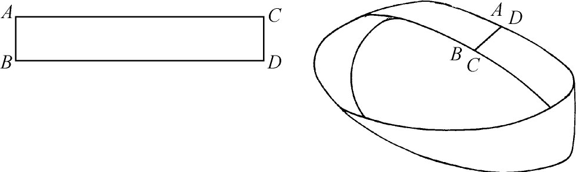
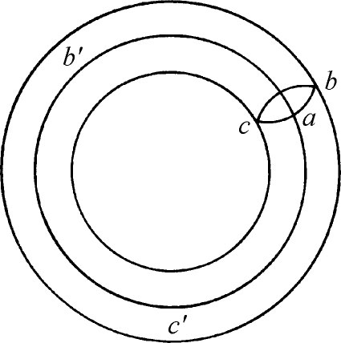
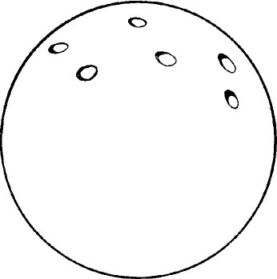
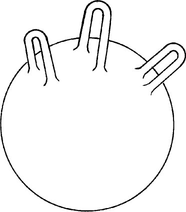
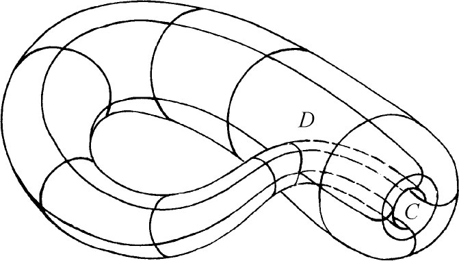
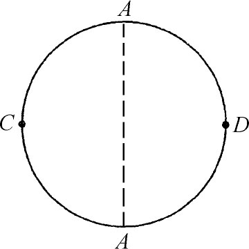

3．组合拓扑的开始
早在1679年，莱布尼茨就在他的《几何特性》（Characteristica Geometrica）里，试图阐述几何图形的基本几何性质，采用特别的符号来表示它们，并对它们进行运算来产生新的性质。他把他的研究叫做位置分析或位置几何学（geometria situs）。1679年，他在给惠更斯（Christian Huygens）的一封信里，说明他不满意坐标几何研究几何图形的方法，因为这方法除了不直接和不美观之外，关心的还只是量，而“我相信我们缺少另一门分析的学问，它是真正几何的和线性的，它能直接地表示位置［situs］，如同代数表示量一样。”(12)莱布尼茨对于他所拟建立的东西给出了少数例子。虽然他的着眼点在于那些几何算法，认为它们会给出纯几何问题的解，他的例子仍然含有度量性质。或许因为他对于所寻求的那种几何并不明确，他的想法和符号没有引起惠更斯的热忱。就莱布尼茨所达到的清楚程度来看，他是预想到了现在所称的组合拓扑。
几何图形的一个组合性质跟欧拉的名字联系在一起，虽然笛卡儿在1639年就知道这性质（通过笛卡儿的未发表的手稿），莱布尼茨在1675年也知道这性质。如果数一数任何闭的凸多面体（例如立方体）的顶点数、棱数和面数，就有V－E＋F＝2。欧拉在1750年发表了这个结果(13)。1751年他提出了一个证明(14)。欧拉对这一关系感兴趣是要用它来作多面体的分类。虽然欧拉发现了所有闭的凸多面体的一个性质，但他没有想到连续变换下的不变性。他也未确定出满足这关系的这类多面体。
1811年柯西(15)给了另一个证明。他挖去了一个面的内部，把剩下的图形铺在一个平面上。这给出一个多边形，它在V－E＋F这个数应该是1。他的证明是这样进行的：把这图形剖分为三角形，然后在一个个地抹掉三角形时计算这个数的改变。这个证明因为假设了任一闭的凸多面体同胚于球面，有不足之处；但19世纪的数学家都承认这个证明。
另一个著名的问题是哥尼斯堡（Koenigsberg）桥的问题。它是当时的一个游戏问题，后来才体会到它的拓扑意义。流经哥尼斯堡的普列格尔（Pregel）河湾处，有两个岛和七座桥（图50.1中用b标出）。老乡们为了消遣，试图在一次连续的散步中走过所有这七座桥，但不准在任何一座上通过两次。欧拉当时在圣彼得堡，听到了这个问题，在1735年找到了解答(16)。他简化了这个问题的表示法，用点代表陆地，用线段或弧代表桥，得到图50.2。欧拉于是把问题提成这样：能否一笔画出这个图；即用铅笔连续不断地一次画出这个图，在每一条弧都只准画一次这条件下，他证明了对于上图，一笔画是不可能的；并且对于任何一组给定的点和弧，给出了能否一笔画出的判别条件。
 |  |
| 图50.1 | 图50.2 |
高斯时常谈到有必要研究图形的基本性质(17)，但并未做出杰出的贡献。他的1834年的一位学生利斯廷（Johann B．Listing，1806—1882，后来任格丁根的物理教授），在1848年出版了《拓扑学的初步研究》（Vorstudien zur Topologie）。利斯廷在这本书中用拓扑这个术语作为他所讨论的内容的名称；其实他认为宁愿用位置的几何这个名称，但他未用，因为冯·施陶特已经把射影几何叫做位置的几何了。1858年利斯廷开始了一系列拓扑研究，用《空间复形的概述》（Der Census raümlicher Complexe）这个题目发表(18)。利斯廷寻求几何图形的定性规律。例如，他企图推广欧拉关系V－E＋F＝2。
默比乌斯是对拓扑研究的本性给出恰当提法的第一个人。他是高斯1813年的助教。他在把不同的几何性质分为射影的、仿射的、相似的和全同的之后，到1863年在他的《初等关系的理论》（Theorie der elementaren Verwandschaft）(19)里，考虑了两个图形，它们的点成一一对应，并在这对应下，邻近的点对应着邻近的点；他建议研究这样联系着的两个图形之间的关系。他从多面体的位置几何着手。他强调把一个多面体看成二维多边形的一个集合；既然多边形能剖分成三角形，这就使得多面体是三角形的一个集合。这个想法后来证明是基本的。他还表明(20)有些曲面能够被剪开，被铺开成多边形；这多边形，连带由于剪开而产生的每对边恰当地等同起来，就是原来的曲面。例如一个双环能够用一个多边形来表示（图50.3），只要把用相同字母标出的棱等同起来就行了。

图50.3
1858年，默比乌斯和利斯廷各自独立地发现了单侧的（one-sided）曲面，其中最闻名的是默比乌斯带（图50.4）。取一片长方纸条，把一个短边扭转180°，然后把这边跟对边粘贴起来，就形成一条默比乌斯带。利斯廷在《概述》中发表了这个图形；默比乌斯在一篇论文(21)里也描写了它。就默比乌斯带这个图形来说，它的单侧性的特征可以说明如下：用刷子油漆这个图形时，能连续不断地一次就刷遍整个曲面。如果一个没有扭转过的带子的一面刷遍了，要想把刷子挪到另一面，就必须把刷子挪动跨过带子的一条边沿。单侧性也可以利用曲面的垂线来定义。让垂线有一个确定的方向。如果这垂线能够在曲面上任意地挪动，并且在它回到原来地点时，它还必定有同一个方向，我们就说这曲面是双侧的（two-sided）。如果有一次方向颠倒了，这曲面就是单侧的。对于默比乌斯带，垂线回到“背面”的那地点时，方向就颠倒了。

图50.4
还有一个问题，地图问题（map problem），后来才看出它是拓扑性质的。这问题是要证明：四种颜色就足够把所有地图涂上色，使得具有至少一条曲线公共边界的国家都被涂上了不同的颜色。一位不闻名的数学教授格思里（Francis Guthrie，？—1899）在1852年作出猜测：四种颜色就足够了，他的弟弟弗雷德里克（Frederick）把这个猜测转告德摩根。专论这问题的第一篇文章是凯莱的(22)；他在文章里说他没有能够证明。一些数学家试图证明；有些发表了的证明当时被接受了，后来却被指出是错误的。这问题至今未解决(23)。
拓扑研究的最大推动力来自黎曼的复变函数论工作。黎曼在1851年他的博士论文中以及在他的阿贝尔函数的研究里(24)都强调说，要研究函数，就不可避免地需要位置分析学的一些定理。在他的这些研究里，他发现有必要引进黎曼面的连通性。他的连通性定义如下：如果在［具有边界的］曲面F上能画n条闭曲线a1，a2，…，an，它们各自单独地或集体地都不能包围曲面F的一部分，但是它们连同任意另一条闭曲线就能包围，这曲面就说是n＋1阶连通的。关于降低连通性的阶，黎曼写道：
利用一条横剖线（Querschnitt），即整个位于曲面内部并连接曲面的一个边界点到另一边界点的一条线，能把一个n＋1阶连通的曲面变成一个n阶连通的曲面F′。由于沿着割线剪开而产生的边界部分，在尔后剪开时仍起着边界的作用，因而一条横剖线不能通过一个点多于一次，但能以它的早先的点之一作为端点……要把这些考虑应用到无边界的曲面，即闭曲面，必须先任意地指定一点，把这曲面变成有边界的，使得第一次剪开曲面时就利用这个点以及一条以这点作起点和终点的横剖线，即一条闭曲线。
黎曼给出锚环或环面（图50.5）这个例子。它是三阶连通的［亏格1或一维贝蒂数2］；利用一条闭曲线abc和一条横剖线ab′c′，就把它变成单连通的曲面。

图50.5
黎曼就这样按照曲面的连通性把曲面分类，并且认识到，他已经引进了一个拓扑性质。若用19世纪后期代数几何学家所使用的曲面的亏格这个术语来说，黎曼事实上已经对闭曲面按亏格分类；如果曲面是亏格p的，把它剪成单连通的曲面所需要的纽形剖线［Rückkehrschnitte］的个数就是2p，并且2p＋1条就能把这曲面剪成两片。他认为下述断言在直观上是明显的：如果两个（能定向的）闭黎曼曲面拓扑等价，它们就具有相同的亏格。他还看出，所有亏格零的闭的（代数的）曲面，即闭连通的曲面，都拓扑地（保角地并且双有理地）等价。每一个都能拓扑地映射成球面。
因为黎曼曲面的结构复杂，而拓扑等价的图形有相同的亏格，所以一些数学家寻找较简单的结构。克利福德证明了(25)具有w个支点的n值函数的黎曼曲面能够变换成具有p个洞的球面，这里p＝（w/2）－n＋1（图50.6）。黎曼可能知道并且用了这个模型。克莱因提出具有p个柄的球面作为另一种拓扑模型（图50.7）(26)。
 |  |
| 图50.6 有p 个洞的球面 | 图50.7 有p 个柄的球面 |
许多人研究了闭曲面的拓扑等价问题。要想叙述这方面的主要结果，必须注意能定向的（orientable）曲面这一概念。一个能定向的曲面是这样一个曲面：它能三角剖分，并且能指定全体（弯曲的）三角形的定向，使得在作为两个三角形的一条公共边的任一边上所诱导出来的定向相反。例如球面是能定向的，但是射影平面（见下文）是不能定向的。这是克莱因发现的(27)。他在这篇论文里所澄清的主要结果是：两个能定向的闭曲面同胚，当且仅当它们具有相同的亏格。克莱因还指出，对于具有边界的能定向的曲面，还必须加上边界曲线的条数相等这一条件。这个定理是若尔当早先证明过的(28)。
克莱因在1882年引进现在所谓的克莱因瓶这一曲面（图50.8）时就强调过，即使是二维的闭图形，情况也可以很复杂。克莱因瓶的瓶颈穿进了瓶，但不跟瓶相交，然后终于跟瓶底沿着C光滑地粘连起来。沿着D，曲面并未被穿破，而管子进入了曲面。克莱因瓶无边，无内并且无外；它是单侧的，它的一维连通数是3，即亏格是1。在三维欧几里得空间中做不出克莱因瓶。

图50.8
射影平面是颇为复杂的闭曲面的另一例。它可以拓扑地表示成一个圆域，其每一对对径的边界点互相等同起来（图50.9）。无穷远直线用半圆周CAD表示。这曲面是闭的，它的连通数是1，即它的亏格是0。也可以把一个圆域的圆周跟一条默比乌斯带的边界（只这一条边界）粘连起来，做成射影平面，虽然在三维欧几里得空间中还是不能做出射影平面，使得应该不同的点不重合。

图50.9
拓扑研究的另一推动力来自代数几何。我们已经提到过（第39章第8节），几何学家曾经转而研究表示两复变数代数函数的定义域的四维“曲面”，并且，以跟二维黎曼曲面上的代数函数和积分的理论相仿的方式，引进了四维曲面上的积分。为了研究这些四维图形，探讨了它们的连通性，并且看出这样的图形不能用一个数字来刻画，像用亏格来刻画黎曼曲面一样。皮卡在1890年左右的一些研究中揭露，刻画这样的图形，至少需要一个一维的和一个二维的连通数。
贝蒂（Enrico Betti，1823—1892）是比萨大学的一位数学教授，他认识到研究更高维图形的连通性的必要。他进而断定考虑n维同样地有意义。他曾在意大利见到过黎曼，当时黎曼因为健康的原因在意大利度过几个冬季。贝蒂从黎曼知道黎曼本人以及克莱布什的工作。贝蒂(29)引进了从1到n－1维的每一维的连通数。如果在一个几何图形上能画若干条闭曲线，而不把图形分成不相连的区域，这种闭曲线的最多条数就是一维连通数（这个数加1就是黎曼的连通数）。如果图形上能作若干个闭曲面，而它们集体地不成为这图形的任何三维区域的边界，这种闭曲面的最多个数就是二维连通数。更高维的连通数有相仿的定义。这些定义中所涉及的闭曲线、闭曲面和更高维的闭图形叫做闭链（如果一个曲面有边界，曲线必须是横剖线；即从一个边界的一点到另一个边界的一点的曲线。所以，一个有限长的空心管子的一维连通数是1，因为能作从一端到另一端的一条横剖线，而不把曲面分隔成两部分）。对于用来表示复数代数函数f（x，y，z）＝0的四维图形，贝蒂证明了一维连通数等于三维连通数。